The steps we took to develop our solution.
The idea for using Horizontal bars to represent air pollution came partially from the website Hipmunk, which uses the same approach display flight information. The idea of using position for your most important metric, and the elegance of the Hipmunk visual encoding was further reinforced a lecture titled “Designing Data Visualization given by Noah Iliinsky at LinkedIn (see video at 37:00)
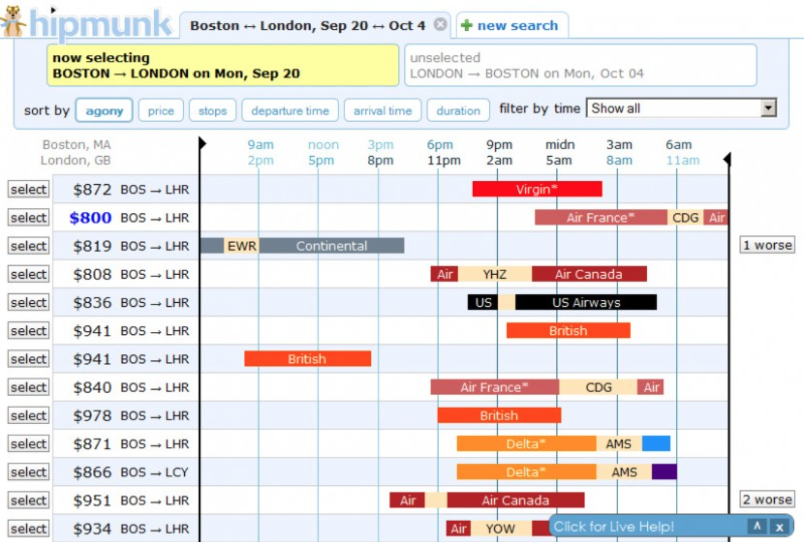
The excellent data visualization documentary The Fallen of World War II (http://www.fallen.io/ww2/ ) was an inspiration for how to represent the imapct of human loss from air pollution in an engaging and impactful way.
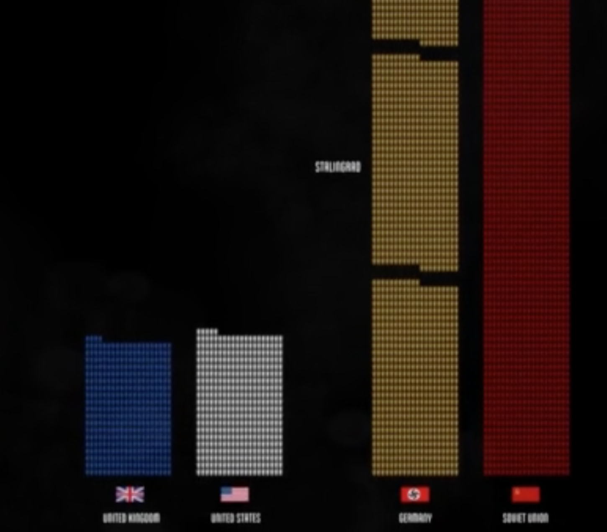
EPA includes four basic visualization methods:
AQI Plot 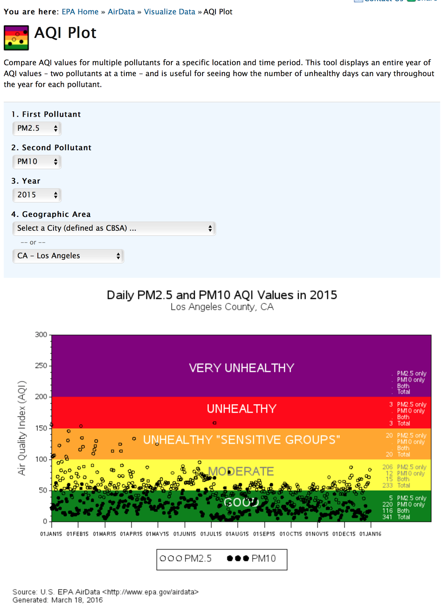
Tile Plot 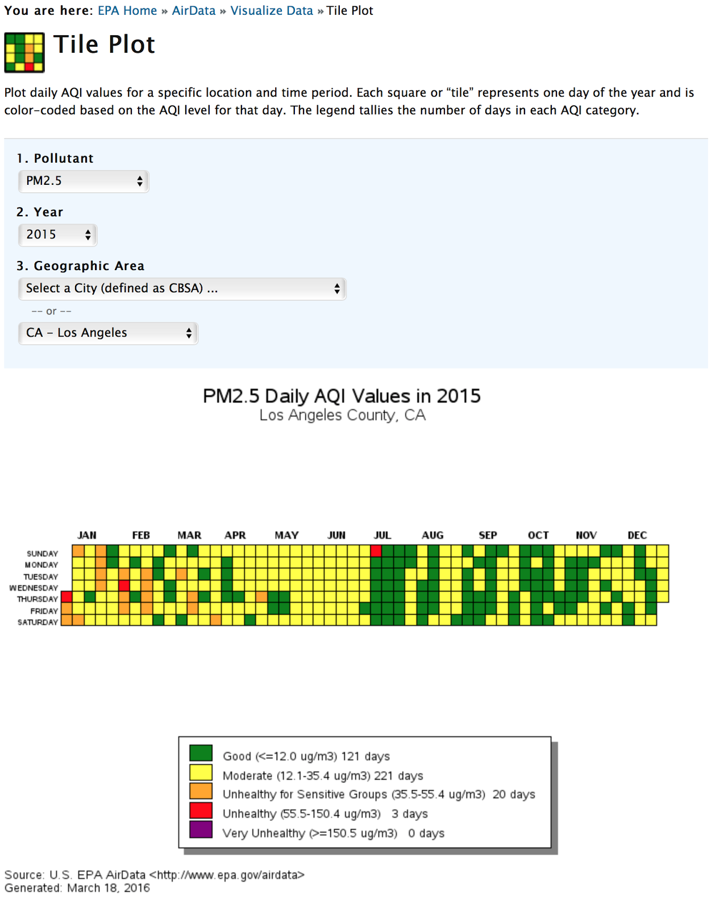
Concentration Plot 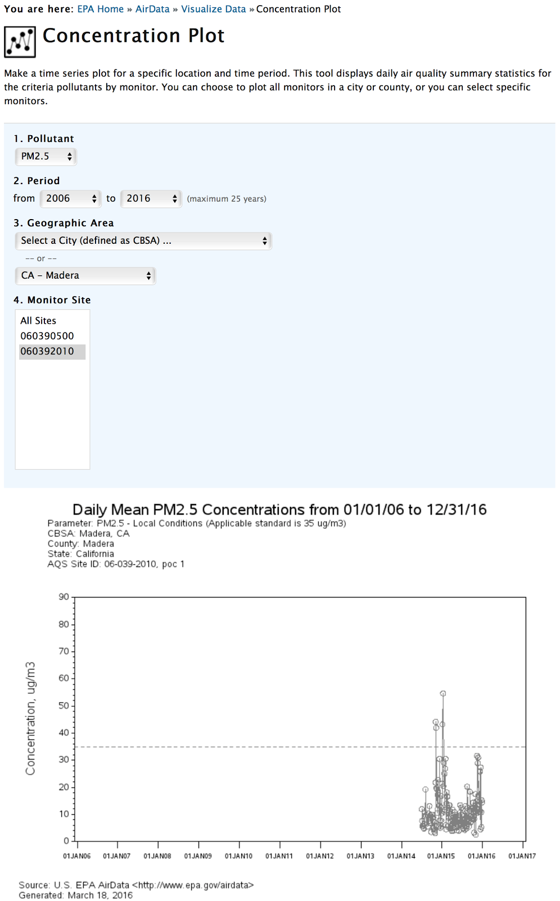
Concentration Map 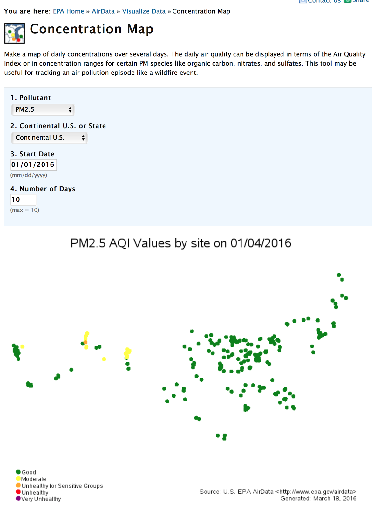
While working on different parts of the project, we thought it would be a smart idea to add some
interactivity in the introduction, to spark interest early. While discussing what to make, an idea came
up for showing all country data. We added the country data of multiple years to show that air pollution
is still an important issue today.
After further development, the question: "How is the earth doing as a whole?" came in mind.
We decided to answer that question by adding a transition to show a bar chart, showing how the global
population is doing compared to 1990.
We found several issues with our original design. Labelling the countries turned out to be very tricky since they would easily overlap. For example, if you lived in a country which had a similar PM 2.5 level to the WHO safe level, the labels would overlap. We overcame this by extending the line by 10px based on the index value of the city, which allowed each city added to be longer than the last. This helped but it extended the vertical height of the chart greatly.
Creating this visualization was pretty simple after a bit of exploration. In D3, each datum is a vertical line which is placed on the x coordinate with a simple scale. The tricky part was treating each line differently. Obviously, the user's home city should display differently from the "additional" cities they add to the chart. Given that we handled the current city within our Service object, it meant that we needed to have two sets of data in the chart. This worked, but meant I had to duplicate code more than I liked.
The chart also required an additional city selector, which meant we had to use typeahead.js again, like we did in the introduction. Because the view and logic code was not decoupled, we had to duplicate the CityPicker class, tweaking it slightly. I wasn't concerned about this duplication at the time, but we discovered that we really had to add the country to the typeahead suggestions for instances like "London, CA" and "London, UK", both showing as "London". Fixing this was more troublesome because it had to be fixed in two places instead of one.
The beijing visualization has not changed during development, other then a technical change: We went from 'text' elements to 'Foreign Objects' to be able to style and link inside the bullet points.
The Delhi visualization uses the same d3 code as the beijing one. it was added because it has the highest pm 2.5 value, but is not mentioned much in the media.
One of us found an article of the NYT here, and thought something like it would be a great addition to the project, to show the data of all cities at once. It started with a few drawings.
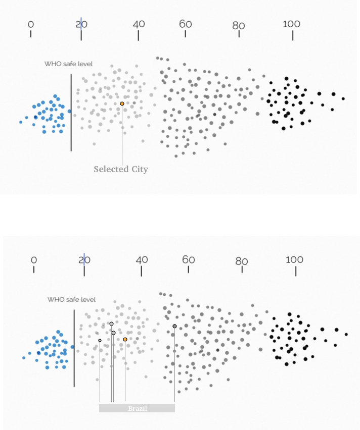Which were translated into a first draft design.
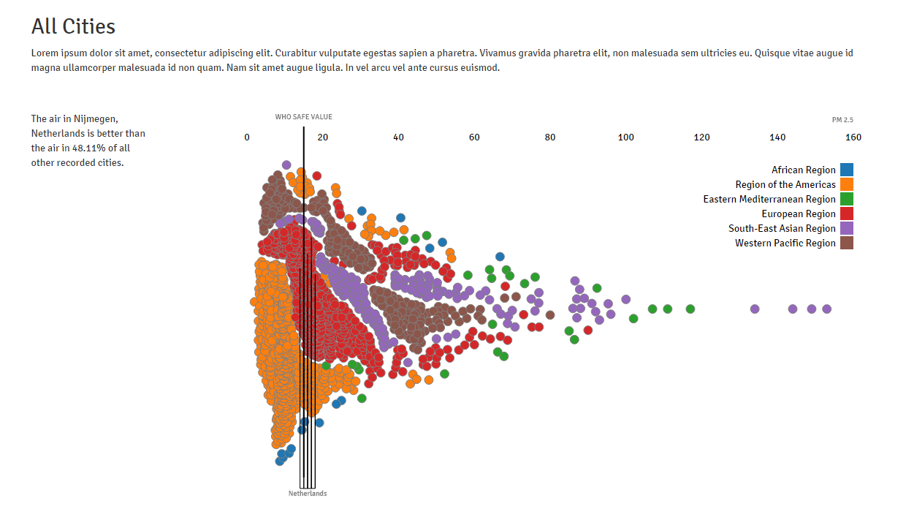After the draft build and some back and forth, we decided that the colors of the different regions were a bit overwhelming. we decided to make those toggleable using the legend. we also removed the lines that showed the different cities, and are showing those using color instead.
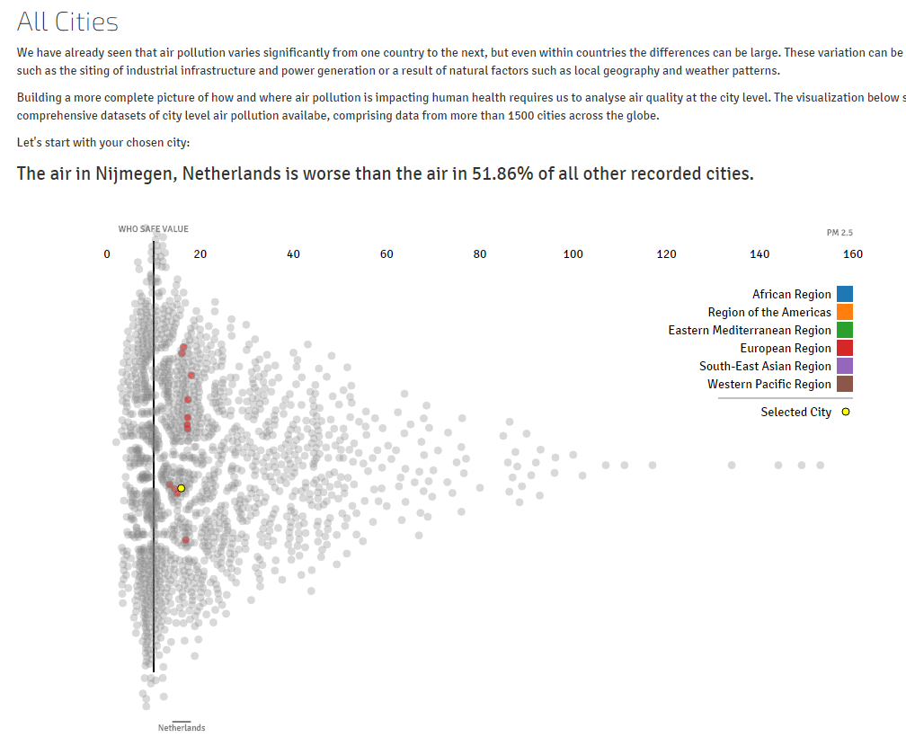
Act 2: Death development
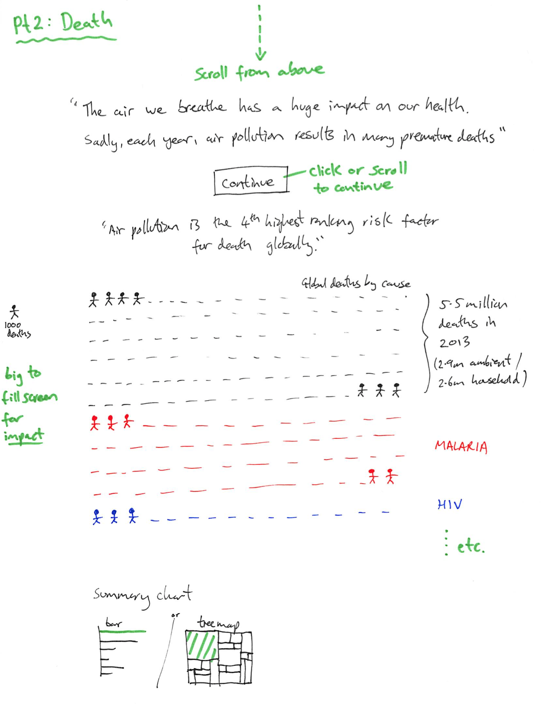
We first had the problem of how to show external svg files with d3. After some research we were able
to show skeletons based on the amount of deaths.
Because these skeletons consist of quite some whitespace, hovering and clicking on them was not as
easy as it looks. This white space also made it less obvious what the border of each group
was.
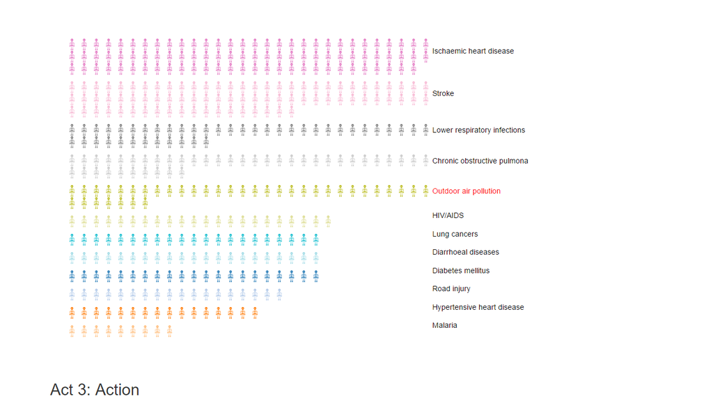
We changed the skeletons to show coffins instead. This made the visualization easier to understand
by glancing at it.
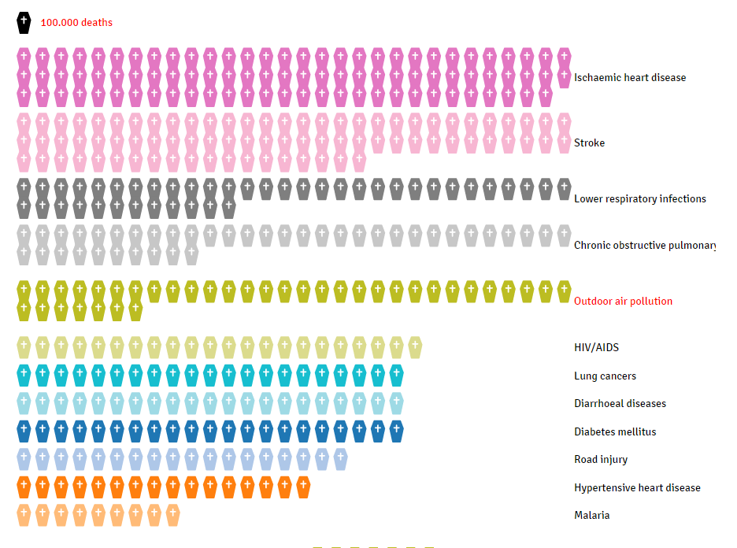
At first, we build a flat world map, where you would be zoomed in into the selected city. When we noticed this could cause trouble with cities in the middle of big countries, we added a topojson file which also showed all regions. this file was 9mb.
Old test version: http://mariusdv.nl/tests/mapzoom/ (slow load)
We later changed the design to a globe and reverted back to the old topojson file. This globe was automatically turned to center your city. After some more brainstorming, we decided that it would be pretty to show your city as a pulsing marker, but also let the globe auto-rotate, which is our current version.